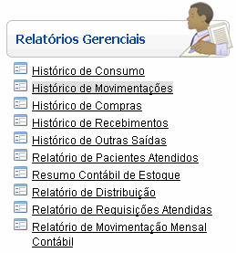
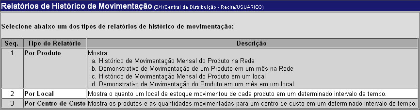
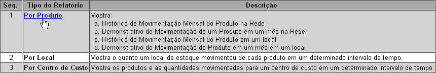
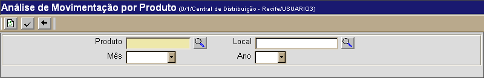
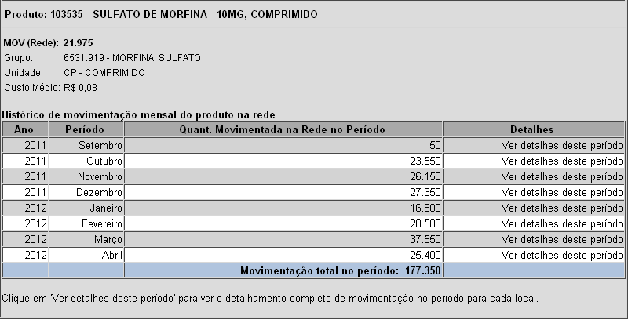
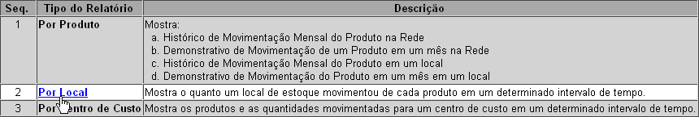
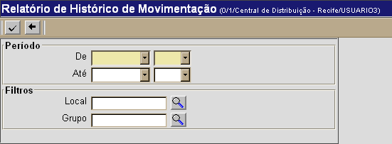
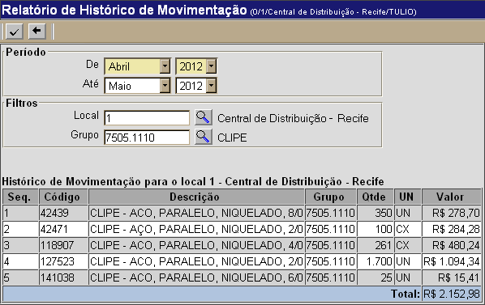
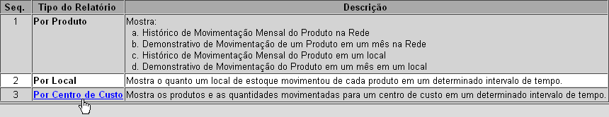
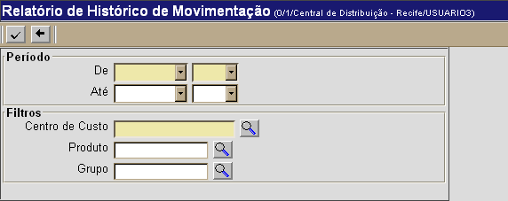

Histórico de Movimentações [ Voltar ] O formulário"Relatório de Distribuição" encontra-se dentro do menu "Relatórios Gerenciais". 

Os seguitens tipos de relatório de consumo estão disponíveis Por Produto. Este relatório exibe: a) Histórico de Movimentação Mensal do Produto na Rede; b) Demonstrativo de Movimentação de um Produto em um mês na Rede; c) Histórico de Movimentação Mensal do Produto em um local; e d) Demonstrativo de Movimentação do Produto em um mês em um local. Por Local. Este relatório exibe o quanto um local de estoque movimentou de cada produto em um determinado intervalo de tempo. Por Centro de custo. Este relatório exibe os produtos e as quantidades movimentadas para um centro de custo em um determinado intervalo de tempo. Histórico de Movimentações por Produto1º Passo: clique no relatório por produto. A seguinte tela será exibida:  2º Passo: utilize os filtros existentes para configurar o relatório. O campo "Produto" é obrigatório. Clique no botão  [Procurar] para selecionar o produto a partir de uma listagem contendo todos os produtos cadastrados. [Procurar] para selecionar o produto a partir de uma listagem contendo todos os produtos cadastrados.3° Passo: clique no botão  para gerar o relatório. para gerar o relatório.

Histórico de Movimentações por Local1º Passo: clique no relatório por produto. A seguinte tela será
exibida:  2º Passo: utilize os filtros existentes para configurar a pesquisa. Os campos em amarelo são obrigatórios. 3° Passo: após configurar a consulta, clique no botão para gerar o relatório.

Histórico de Movimentações por Centro de Custo1º Passo: clique no relatório por produto. A seguinte tela será exibida:  2º Passo: utilize os filtros existentes para configurar o relatório. Os campos em amarelo são obrigatórios. 3° Passo: clique no botão para gerar o relatório.
|